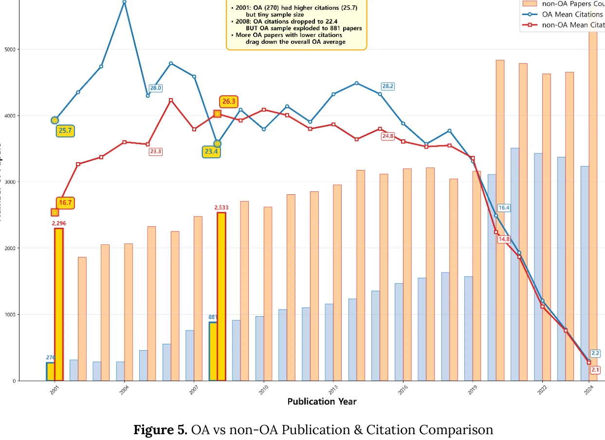

저자: Sunwoo Lee, Wonsik Shim | 날짜: 2026-03-20 | DOI: 10.47989/ir31iconf64133

Figure 5. OA vs non-OA Publication & Citation Comparison
도서관 정보학(LIS) 분야에서 개방접근(OA) 논문의 인용 영향력을 실증 분석한 결과, OA가 반드시 인용 이점을 제공하지 않으며 OA 유형, 학문분야, 출판 시기에 따라 조건부로 작용함을 밝혔다.
Figure 5. OA vs non-OA Publication & Citation Comparison
총평: LIS 분야의 OA 인용 이점을 처음으로 대규모 실증 분석하여 기존의 일반화된 주장에 대한 학문 분야별 차등성을 입증했으며, 특히 시간 경과에 따른 OA 이점의 소멸 현상은 OA 정책 수립자와 출판사에게 중요한 시사점을 제공한다.